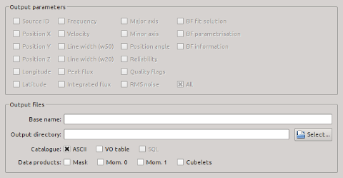

The parameters below control the storage of source catalogues and other data products.
| Module / Parameter | Type | Values | Description |
|---|---|---|---|
| steps.doWriteCat | bool | true, false | Write source catalogue(s) to disk? |
| writeCat.parameters | string | list of parameters; default: ['*'] | List of parameters to appear in source catalogue. Format: ['par1', 'par2', ...]. An asterisk ['*'] means all parameters. |
| writeCat.baseName | string | file name | Optional base name of all output files. If not specified, the input file name will be used by default. |
| writeCat.writeASCII | bool | true, false | Write catalogue in ASCII format. |
| writeCat.writeXML | bool | true, false | Write catalogue in VO table (XML) format. |
| writeCat.writeSQL | bool | true, false | Write catalogue in SQL format (not yet implemented). |
| Default values are set in bold-face font. Parameters on a red background are not accessible through the user interface. | |||
| Module / Parameter | Type | Values | Description |
|---|---|---|---|
| steps.doWriteMask | bool | false, true | Save mask cube? |
| steps.doMom0 | bool | false, true | Create and save moment-0 map? |
| steps.doMom1 | bool | false, true | Create and save moment-1 map? |
| steps.doCubelets | bool | false, true | Create and save sub-cube of each source? |
| Default values are set in bold-face font. | |||